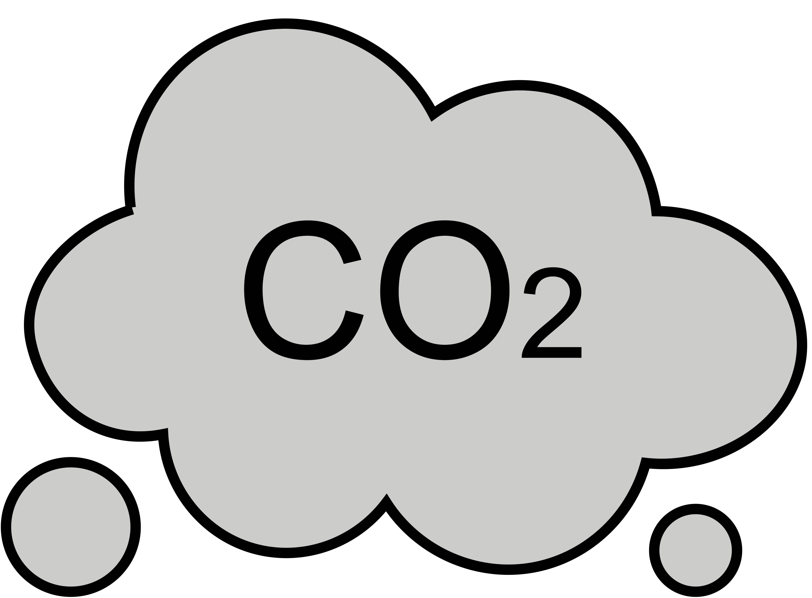
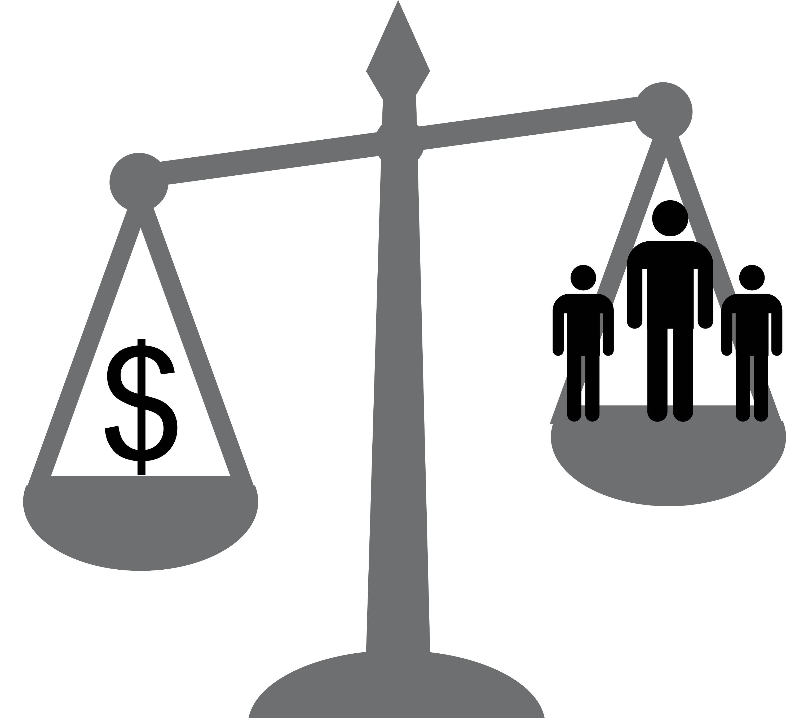
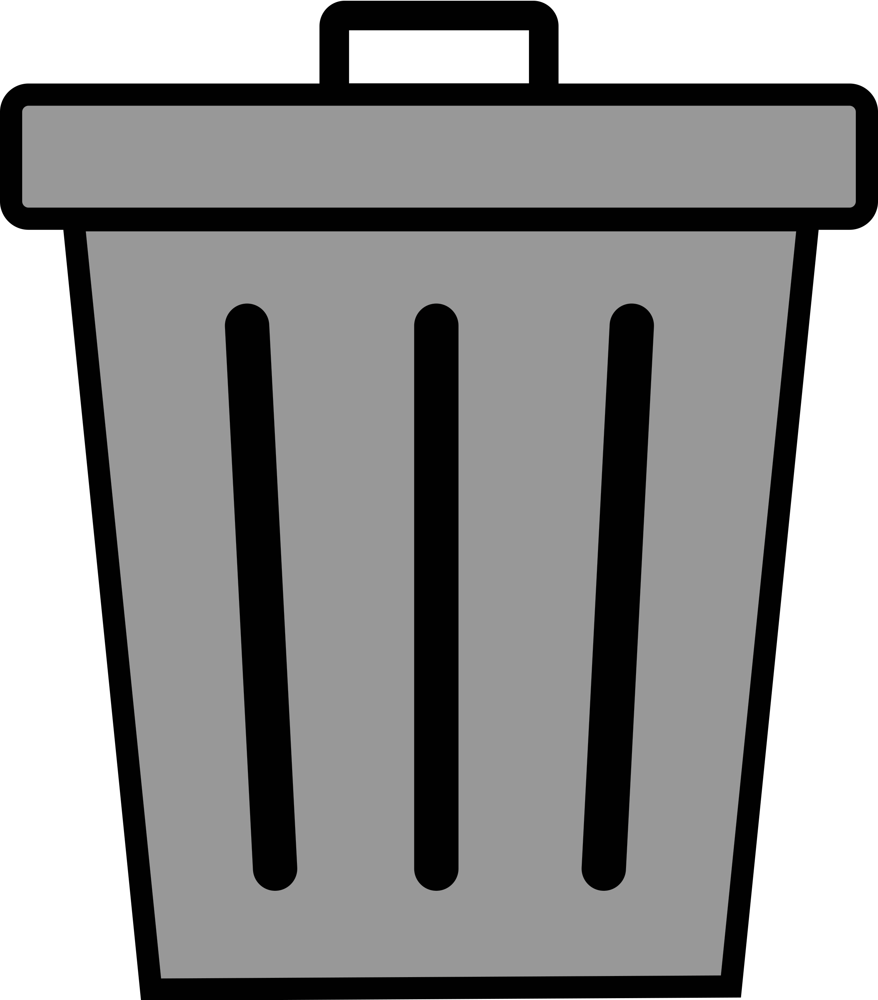

Kleding & milieu
Wat heeft kleding precies met het milieu te maken?
De kledingindustrie is een van de meest vervuilende industrieën en een van de grootste bijdragers aan klimaatverandering ter wereld. 10 % van de totale c02 uitstoot wordt veroorzaakt door de productie en verkoop van kleding. De industrie is tegenwoordig vooral gericht op het creëren van ‘fast fashion’; zo snel en goedkoop mogelijk zo veel mogelijk kleding creëren om zo veel mogelijk winst te behalen. Dit gaat ten koste van de kwaliteit, mensenrechten en het milieu. Er wordt veel te veel kleding geproduceerd en geconsumeerd, om vervolgens na een korte tijd weer in de prullenbak te belanden.
Wat zijn nou precies de gevolgen van de kledingindustrie op het milieu, de natuur en mensenlevens?
Tijdens het gehele proces van de kleding productie worden enorme hoeveelheden liters water gebruikt én vervuilt. Per shirt wordt er bijvoorbeeld soms al 2700 liter gebruikt, en voor een spijkerbroek kan het oplopen tot 7000 liter. Hierdoor worden natuurlijke waterbronnen uitgedroogd en ontstaat er meer watersnood in landen waar dit al een probleem is.
De kleding wordt in lageloonlanden geproduceerd aangezien het hier goedkoper kan en er minder regels zijn waar de bedrijven zich aan moeten houden. Dit zorgt ervoor dat de kleding en de materialen waar het uit bestaat van continent naar continent worden vervoerd. Tijdens het transport komen er veel uitlaatgassen vrij.
In deze landen worden arbeiders, waarvan een groot gedeelte uit kinderen bestaat, uitgebuit om al deze kleding zo snel mogelijk te produceren. Ze werken onder slechte (en soms fatale) arbeidsomstandigheden, en dat allemaal voor een hongerloon. En dit terwijl de bedrijven er zelf van doorgaan met alle winst.
Omdat de kleding gemaakt wordt met de bedoeling niet lang gedragen te worden, zorgt het voor een enorme hoeveelheid afval. De kleding bestaat voor een groot deel uit plastic en bevat vaak giftige chemicalien. 85 % van de kleding belandt al gauw op afvalhopen die gedumpt worden in derdewereldlanden, die dit niet aankunnen en waar het het natuurlijke landschap aantast.
Wat is de oplossing?
Gelukkig is er een manier om aan kleding te komen van betere kwaliteit en betaalbare prijzen, zonder dat dit mensenrechten schaadt en ten koste gaat van de natuur en het milieu: Kleding recyclen. Door kleding tweedehands te kopen, hoeft het niet opnieuw geproduceerd te worden. Dit betekent geen nieuwe uitstoot, waterverspilling en plasticafval. Ook betekent dit minder uitbuiting van arbeiderss, aangezien het voor een mindere vraag om kleding zorgt, waardoor er minder geproduceerd hoeft te worden. Verder krijgt de kleding een tweede leven in plaats van dat het ergens op een al veel te grote afvalhoop terecht komt.